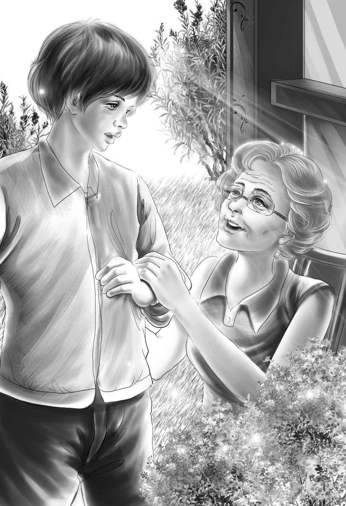

Chapter 9 What was in the Box
简姑婆并不在屋子里，一向和她形影不离的小狗也没跑出来迎接他们。班尼大声喊道：“简姑婆！”可是没有回应。于是亨利又呼唤着小狗的名字：“公主！公主！”
这时，屋后的院子里才传来一阵小狗的叫声。原来简姑婆正坐在那儿看维莉发现的大书。听到孩子们的声音，简姑婆抬起了头。
“你们的探险进展如何？”她问道。
班尼迫不及待地将小木屋下的地洞告诉了简姑婆，接着，杰西把古董烛台递给她看。
“好古老的烛台！”简姑婆惊呼道，“一看就是独立战争时期用的烛台！”
“杰西刚刚也是这样说的。”维莉说，“对了，我们还发现了一个旧铁盒子。”
“赶紧把它打开！”简姑婆说，“这看起来像是装蜡烛用的蜡烛盒呐！”
“也就是说，有人点着蜡烛藏在黑漆漆的洞里。”亨利说，“简姑婆，他们为什么要这么做？”
“刚刚那本书倒是给了我一点灵感，不过亨利，你得先把盒子打开，让我们看看。”
“恐怕我只能把它撬开了，”亨利说，“瞧，盒子已经锈成这样了。”
“管它呢，撬就撬吧！”简姑婆叫道。
“我去拿锤子和凿子，”班尼大声说，“马上就来。”
他一溜烟跑进房里，很快就拿着工具出来了，亨利立刻开始忙活，将盒子一点一点撬开。终于，盒盖掉了下来。
“这是什么？”班尼叫道，“忙活了半天原来只是一堆黑色粉末呀！”
“这是火药啊！”简姑婆兴奋得眼睛闪闪发亮，“我在维莉的书里看到了关于火药的故事，才知道人们挖洞是用来藏弹药的！”
“说得没错，”亨利轻声说，“我们好像找到了他们藏弹药的一个点！”
“然后他们会想方设法把弹药运到康科德市去。”杰西补充道。
“多半是藏在干草里运过去的！”维莉加了一句。
大家面面相觑。

亨利说：“简姑婆，要是刚才我们进到隧道里，说不定会有更多发现呢！”
“主要是担心有人把地洞的盖子盖上，那样我们就惨啦！”班尼解释道，“下一次，我们会留一个人在外面放哨的。咦，山姆去哪儿了？”
原来山姆早就回去忙活了。
简姑婆说：“一定要记住，每次去小木屋，你们都得让山姆陪着！”
“我也是这么想的，”杰西说，“看看那些昨天才动过的土就知道，附近绝对住着陌生人。”
“那人还每天从豆先生家里偷鸡蛋。”班尼补充道。大家都笑了起来。
可是班尼的语速慢了下来，似乎提到豆子农场让他想起了什么事情。“简姑婆，您为什么没嫁给豆家的安迪？”
“告诉你噢，班尼，从来没人敢问我这个问题呢！”
“那我是不是太莽撞了？”班尼说。
“是的！”简姑婆说，“不过——我并不介意告诉你，当时我确实太傻了，安迪向我求婚时，被我拒绝了，而且现在我才意识到，拒绝的理由相当愚蠢。我的第一个理由是他比我小两岁，可实际上他非常高大，看起来比我成熟多了。你们猜猜，我拒绝他的第二个理由是什么？”
“什么？”孩子们异口同声地问道。
“我不想被叫做——豆-太-太！”
维莉轻轻拍着简姑婆的手说：“我觉得这个理由不算很傻啦！”
“噢，简直是傻透了。”简姑婆说，“后来，我在心里后悔了一千遍。安迪是个帅气、聪明的男孩，有着灿烂的笑容。他弟弟现在住在豆子农场里，他妻子——豆太太，就是告诉你鸡蛋失窃的那一位吧，班尼？”
“这次的探险越来越有趣啦！”班尼兴奋地说，“每天都有新闻呢！”
“没错，班尼，”简姑婆笑着说，“自从我见到你们几个以后，每天都有好事发生。以前我的生活就像一潭死水。”
“明天我们想再去那个地下室搜一搜，”亨利说，“不过我要先读读这本旧书，才能知道搜寻的目标。”
“说不定我们能找到一把老枪呐！”班尼说，“就是那种老式的燧石火枪！”
“哦，班尼！”维莉突然喊道，她的眼睛放出了光芒，“知道你刚才说的话让我想到了什么吗？说不定安迪的火枪就是在地下室里找到的！”
大家听完都激动了起来，不过杰西还是保持了冷静，“我倒不这么觉得。你们忘了么，那枪是别人给安迪的！”
“杰西说得对。”班尼说，“据说给他枪的人就藏在咱们的房子里！所以才会流言四起，以至于没人愿意住在这儿。”
“不管怎样，”亨利说，“就算耗上整个夏天，我们都要解开这个谜。”
“做好心理准备哦，孩子们，”简姑婆轻轻地说，“说不定真的要耗上整个夏天呢！”
亨利冲简姑婆笑了笑。整个夏天又如何，他坚信这个谜一定能解开。而且，只要他和班尼的想法没错，真相大白的那一天就快到了。